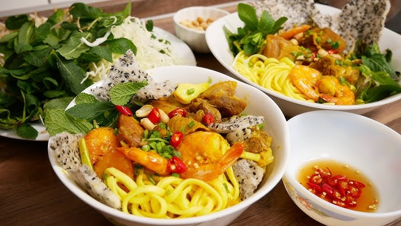
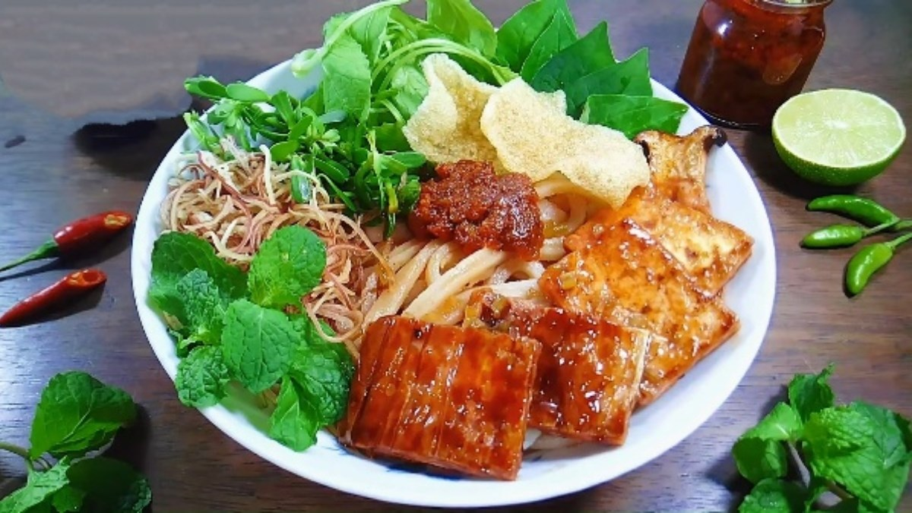
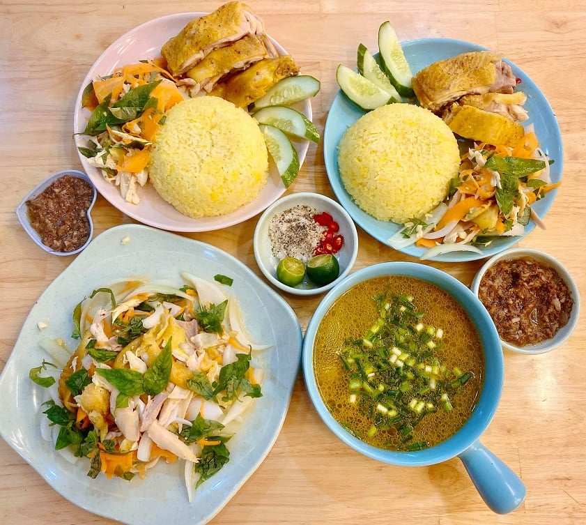
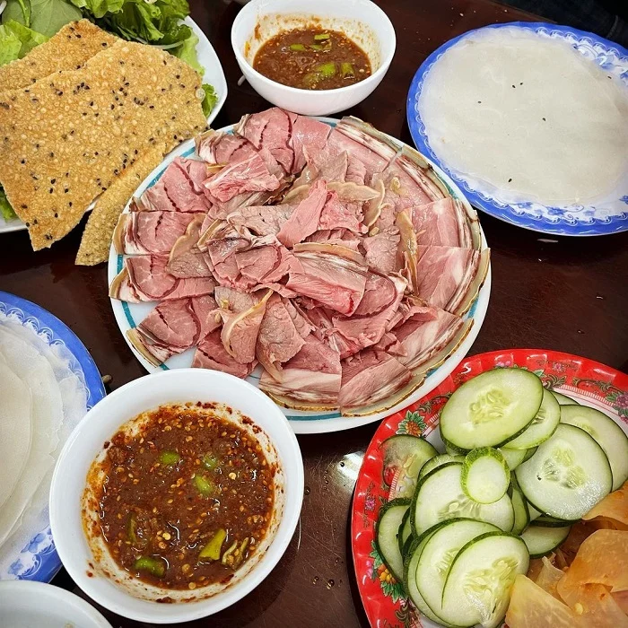

About
If you ever visit Tam Ky, my hometown, I highly recommend trying these three popular street foods. They are delicious, affordable, and loved by both locals and visitors.
Gallery






If you ever visit Tam Ky, my hometown, I highly recommend trying these three popular street foods. They are delicious, affordable, and loved by both locals and visitors.



